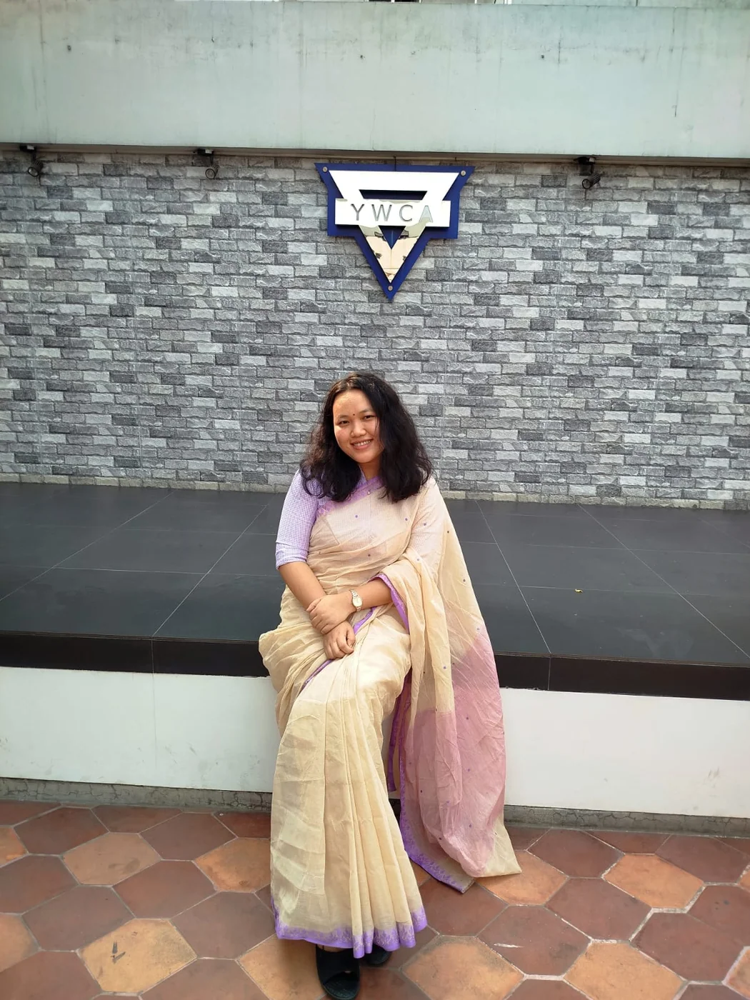
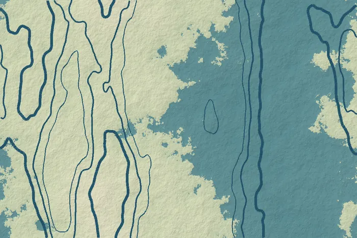

GIS & Remote Sensing
Mapping, satellite image analysis and spatial databases that turn location data into evidence.
SPEDAR Consultants combines geospatial intelligence, environmental research, strategic planning and digital innovation to support informed decisions and sustainable development.
SPEDAR is an emerging multidisciplinary consultancy based in Bangladesh. We bring planners, geographers, environmental scientists, GIS analysts, social researchers and digital specialists together on one team.
Complex development questions rarely sit inside one discipline. A forest restoration plan needs satellite analysis, ecology and community insight; a planning study needs spatial data, socioeconomic surveys and clear communication. We design each assignment around the evidence it needs, then turn that evidence into outputs that decision-makers can use.
Six connected practice areas, staffed by specialists who work across project boundaries.
Mapping, satellite image analysis and spatial databases that turn location data into evidence.
Baseline studies, climate vulnerability assessment and environmental monitoring support.
Land-use, settlement and infrastructure analysis for sustainable spatial development.
Applied research design, field surveys, socioeconomic assessment and technical reporting.
Data analysis, dashboards, interactive maps, websites and software prototypes.
Policy analysis, SDG-aligned research and resilience strategies for development programmes.
Our services span environmental inspection and monitoring, green building support, energy audits, carbon accounting, industrial waste management and ESG reporting.
Indoor and ambient air, stack emissions, noise, lighting, boiler and generator performance, environmental monitoring and EHS assessment.
Explore services → 02 / GREEN FACILITIESFacility energy efficiency, green building readiness, apparel environmental performance, certification documentation and improvement plans.
Explore services → 03 / ESG & CARBONCorporate carbon footprints, Scope 1–3 inventories, sustainability reporting, disclosure frameworks and decarbonisation pathways.
Explore services → 04 / INDUSTRIAL SOLUTIONSWaste management, 3R plans, chemical compliance, cleaner production, wastewater and air emission abatement options.
Explore services →Explore 350 service topics in 21 disciplines—from GIS and planning to environmental safeguards, hydrology, engineering, WASH, economic studies and digital systems. All services are offered through defined project scopes, with specialist oversight where required.
Different sectors, shared need for reliable evidence. These are areas where our team's skills can support project and research questions.
Land-use change, accessibility, infrastructure options and spatial development priorities.
Explore planning expertise 02 / LAND & ECOSYSTEMSSatellite-based change analysis, vegetation patterns, landscape connectivity and mapped evidence.
Explore geospatial expertise 03 / ENVIRONMENT & RISKBaseline assessment, exposure mapping and climate-informed research for local decisions.
Explore environmental expertise 04 / PEOPLE & POLICYField surveys, stakeholder perspectives, socioeconomic analysis and actionable reporting.
Explore research expertiseWe are a young firm, so we lead with method rather than history. These principles shape every proposal and deliverable.
How we workRecommendations follow from data and documented methods. We state assumptions, report uncertainty and separate findings from interpretation.
Spatial analysts, planners, social researchers and developers work on the same problem from the start, rather than handing work along a chain.
We use open satellite data, GIS, statistical tools and custom software where they improve accuracy, speed or clarity, not for their own sake.
Our team knows Bangladesh's landscapes, institutions and communities. Field verification and local knowledge sit alongside remote analysis.
We agree scope, milestones and review points with clients and partners, and share interim results so that the final product meets real needs.
Featured research
A research collaboration announced with the Institute of Forestry and Environmental Sciences, University of Chittagong, examining how forest cover in Lama Upazila has changed over the past decade and what that means for ecological connectivity.
Choose the question closest to yours. See the relevant practice area and examples of possible outputs—then tell us what you need.
Useful starting materials: study area, available spatial data, project objectives and required map scale.
Useful starting materials: site or study boundary, development objective, existing plans and stakeholder context.
Useful starting materials: location, environmental concern, available observations and assessment purpose.
Useful starting materials: research question, target community, sample needs and required evidence.
Useful starting materials: target users, datasets, intended decisions and existing workflow.
Outputs are examples, not a fixed package. Scope and specialist availability are confirmed for each assignment.
A team of twelve professionals across GIS, research, planning, software, design and administration, led by practitioners with consultancy and research experience.

Chief Executive Officer & Managing Director
Head of GIS & Remote Sensing

Head of Research & Development
Web Development Lead
Creative Design & Digital Marketing Lead
Explainers on the methods and policy questions behind our work.
Forest loss is only part of the story. How the remaining forest is arranged, and whether patches stay connected, shapes what a landscape can still support.
Free, regularly updated satellite data has changed what a planning study can measure. The value lies in consistent methods, honest accuracy reporting and clear communication.

Bangladesh has one of the most developed adaptation policy frameworks of any climate-vulnerable country. Turning plans into local results depends on good spatial evidence.
Clear documentation, reviewed data and practical handover matter as much as an attractive final deliverable.
How we scope & deliver assignmentsDocument sources, assumptions and limitations.
Check data and discuss interim findings.
Agree formats, documentation and next steps.
Tell us about your project, study or idea. We will reply with questions, a proposed approach, or an honest view on whether we are the right team.
Start a conversation